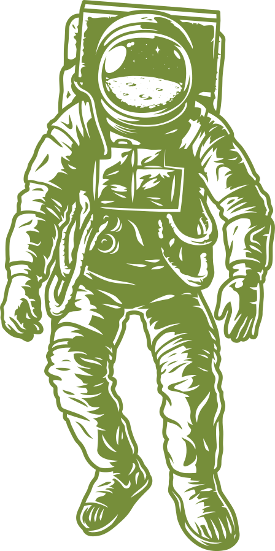
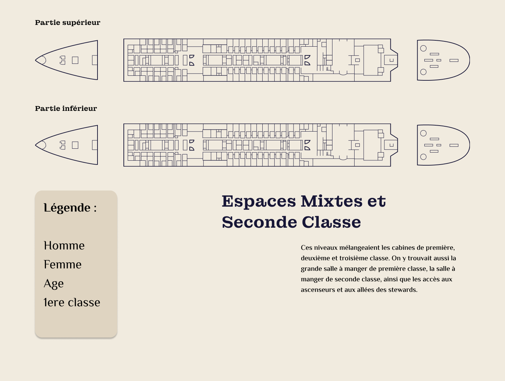

Design fiction
Le point de départ
L’objectif était d’imaginer une technologie existante aujourd’hui, mais de la projeter dans le futur. Pour commencer, j’ai mené un travail de recherche à travers des articles, des exercices réalisés en cours, et plusieurs pistes de réflexion. Mais rien ne me parlait vraiment.
C’est en creusant un peu plus que la vraie question m’est venue : Quel sujet est fascinant, mais reste totalement inaccessible ? La réponse était évidente : l’espace. Un territoire immense, mystérieux, presque poétique… et pourtant réservé à une élite. Et si, dans un futur proche, les voyages spatiaux devenaient accessibles à tous, aussi facilement qu’un city trip ? C’est sur cette idée que j’ai bâti mon projet de design fiction.

La réflexion créative
Maintenant que le sujet était trouvé, il me restait à imaginer comment le traduire dans un site web. J’ai donc commencé par me plonger dans le domaine spatial pour comprendre ce qui existe aujourd’hui, ce qui est en développement, et ce qui pourrait rester plausible dans un futur proche.
À ce stade, j’hésitais encore : fallait-il créer une plateforme de réservation façon hôtel ? Ou plutôt un site informatif, qui présente les différents types de voyages possibles ? Grâce aux échanges avec mes professeurs et mes camarades, ma vision s’est précisée. J’ai donc choisi de proposer une description immersive et crédible des différentes formules de voyages spatiaux.
Conception du design
Pour le design, j’ai commencé par créer un moodboard pour savoir quelle ambiance je voulais poser . Ensuite, je me suis lancé sur la page d’accueil.
J’ai aussi enchaîné avec les pages dédiées aux différents types de voyages., j’ai créé une série de pages aux ambiances visuelles distinctes : Mars, la Lune, en orbite terrestre, et à la découverte de la profession. Chaque destination a son propre visuel, pour créer une immersion et donner du caractère à chaque voyage.
L’objectif était de plonger l’utilisateur dans une simulation de site touristique futuriste, où chaque voyage spatial est présenté comme une vraie offre de vacances. J’ai travaillé les visuels et les informations (prix, durée, départ, entraînement) comme sur un site de réservation, tout en gardant une part de rêve et de mystère. Le design général reste sobre, épuré, avec une dominante spatiale dans les couleurs.
Interactivité & animations immersives
Pour ce projet, j’avais envie de me dépasser côté code. Depuis le début de l’année, je me sens plus à l’aise en design, mais le développement reste un frein qui m’empêche parfois de concrétiser pleinement ce que j’imagine visuellement. Et franchement, c’est frustrant. Ça donne souvent des projets qui me laissent sur ma faim. C’est pour ça que j’ai volontairement opté ici pour un design plus sobre, afin de me laisser davantage de liberté dans le code ,notamment pour intégrer des animations. Jusqu’ici, je n’osais jamais trop en ajouter : ça me semblait trop complexe. Mais avec le thème que j’ai choisi, je ne voyais pas ce site sans un minimum de vie et de mouvement. Alors cette fois, j’ai décidé de me lancer, d’expérimenter, et surtout, de dépasser cette peur de l’animation.
Ce que ce projet nous a apporté
Ce projet nous a permis d’allier créativité, rigueur et travail d’équipe pour concevoir une expérience engageante et interactive. En surmontant divers défis techniques et artistiques, nous avons transformé une idée en un projet abouti, fidèle à notre vision.
Il nous a également permis de renforcer nos compétences en développement collaboratif via GitHub, en apprenant à travailler efficacement en équipe sur un même dépôt. Enfin, nous avons découvert et exploité le potentiel de la librairie GSAP, qui nous a permis d’ajouter des animations fluides et immersives, renforçant l’impact visuel et l’expérience utilisateur.